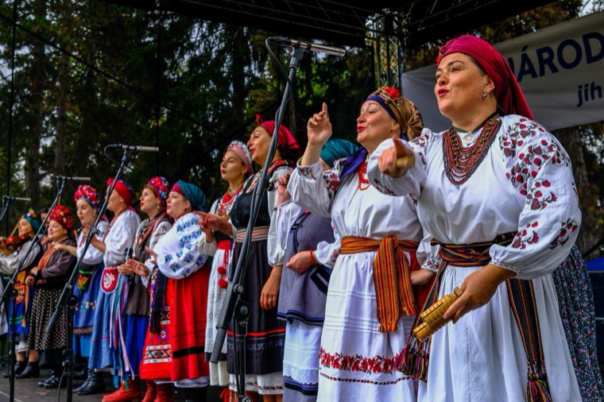

01
Староукраїнське Різдво
Колядки й щедрівки з різдвяною зіркою. Святкова програма, яку ми щороку представляємо в Брно та Відні.
Традиційний багатоголосий спів і жива народна музика з різних регіонів України.

Ми виступали, зокрема
Про нас
Український фольклорний ансамбль «Купава» заснований у лютому 2023 року за підтримки Українського центру в Брно. Ми – фольклорний ансамбль і водночас хор: займаємося традиційним українським багатоголосим співом і народною музикою з різних регіонів України – співаємо українською, у строях, під живу музику.
В ансамблі співають українки, які давно живуть у Чехії, жінки, що були змушені покинути Україну після повномасштабного російського вторгнення 2022 року, а також чехи, які люблять український фольклор.
Ми виступаємо на фольклорних фестивалях, адвентних і різдвяних концертах, у храмах і на культурних подіях міст і громад.
Художня керівницяMgr. Катерина Михайлова
Купава – давнє слов’янське ім’я: «гарна, святково вбрана» або «жінка з граціозною і гордою ходою».

Вивчаємо й зберігаємо українські народні пісні, музику та традиційні строї.
Несемо український фольклор на сцени фестивалів, у концертні зали й храми.
Підтримуємо зустрічі та порозуміння між українською і чеською культурами.

Концерт для життя II
У квітні 2025 року ми виступили в храмі св. Вацлава в Остраві на благодійному «Концерті для життя II», який наживо транслювало TV Noe. Разом зі співаком Павлом Геланом, чесько-українським хором «Соняшник» і дитячим хором «Співаночки» ми підтримали реабілітацію ветеранів війни та поранених дітей з України – глядачі пожертвували 200 000 крон.
Репертуар
Колядки й щедрівки з різдвяною зіркою. Святкова програма, яку ми щороку представляємо в Брно та Відні.

Ліричні, обрядові й танцювальні пісні в традиційному багатоголоссі з живою музикою – для фестивалів, концертних залів і культурних подій.
Ми співаємо українською мовою.
Виступи
Загалом 46 виступів з 2023 року – фольклорні фестивалі, адвентні й різдвяні концерти, концерти в храмах і культурні події в Чехії, Словаччині та Австрії.
Найближчі виступи


Велька Бистршице

Літомишль

Відень

Стражніце
Острава

Брно
«Повний храм у Брно поринув в атмосферу староукраїнського Різдва.»ЧТК / České noviny, 05.01.2025 (переклад)
Новини
У суботу 5 грудня 2026 року «Купава» заспіває староукраїнські колядки й щедрівки на Моравській площі в Брно.
Читати далі →5 вересня 2026 року «Купава» виступила на Міжнародному фольклорному фестивалі Lidový rok у Велькій Бистршиці.
Читати далі →
15 і 16 серпня 2026 року «Купава» виступила на Ходському святі в Домажліце.
Читати далі →27 червня 2026 року «Купава» виступила в програмі «Фестивальні сади» на фестивалі Smetanova Litomyšl.
Читати далі →Відео
Ой, устану ранесенькоBabylonfest, Брно 2023
Славен єсиУкраїнські колядки
Зеленеє жито, зеленеBabylonfest, Брно 2023
Для медіа та організаторів
Фотографії у високій роздільній здатності, логотип і коротка довідка про ансамбль для фестивальних програм, афіш і прес-релізів. Використовуючи фото, просимо зазначати джерело «Ансамбль Купава».
Фотографії
«Купава» – український фольклорний ансамбль з Брно, заснований у лютому 2023 року. Ансамбль займається традиційним українським багатоголосим співом і народною музикою з різних регіонів України – співає українською, у народних строях, під живу музику. Виступав, зокрема, на Міжнародному фольклорному фестивалі у Стражніце, фестивалі Smetanova Litomyšl, Ходському святі та в прямому ефірі «Концерту для життя II» на TV Noe. Художня керівниця: Mgr. Катерина Михайлова.
Часті запитання
«Купава» – український фольклорний ансамбль і хор з Брно (Чехія), заснований у лютому 2023 року. Ансамбль виконує українські народні пісні та колядки в традиційному багатоголоссі, у народних строях і під живу музику. Художня керівниця – Mgr. Катерина Михайлова.
Так. «Купава» – український фольклорний ансамбль і хор, що діє в Брно та виступає в Чехії, Словаччині та Австрії. В ансамблі співають українки, які живуть у Чехії, а також чехи, які люблять український фольклор.
Ліричні, обрядові й танцювальні народні пісні з різних регіонів України, а також колядки й щедрівки – українською мовою, у традиційному багатоголоссі. Наприклад, «Зеленеє жито, зелене», «Ой, устану ранесенько», «Добрий вечір тобі, пане господарю».
І те, і те. Як хор «Купава» співає багатоголосо – хоровий спів є основою кожного виступу. Як фольклорний ансамбль виконує народні пісні в строях і під живу народну музику: скрипка, акордеон, контрабас, бандура й цимбали.
Багатоголосий спів означає, що пісня звучить кількома голосами одночасно. В українській народній традиції мелодію часто ведуть нижні голоси, а над ними звучить високий верхній голос – підголосок. Саме так «Купава» співає народні пісні й колядки.
Так. Під час адвенту й на Різдво ансамбль представляє програму «Староукраїнське Різдво» з колядками й щедрівками – останніми роками в храмі св. Йосифа в Брно, біля Йошта на Моравській площі та у Відні.
На фольклорних фестивалях (зокрема в Стражніце та на Ходському святі), на фестивалі Smetanova Litomyšl, на концертах і різдвяних програмах у Брно та Відні. Найближчий виступ: Староукраїнське Різдво біля Йошта, 5 грудня 2026 (Моравська площа, Брно). Записи є на YouTube.
З 2023 року Різдво в Україні офіційно святкують 25 грудня. На Святвечір родина збирається за дванадцятьма пісними стравами, колядники ходять з восьмипроменевою різдвяною зіркою й колядують. На Щедрий вечір, напередодні Нового року, співають щедрівки. «Купава» щороку представляє програму «Староукраїнське Різдво».
Колядки – різдвяні пісні, які співають від Святвечора. Щедрівки – новорічні пісні з побажанням щедрості, добра й щастя господарям. Найвідоміша у світі щедрівка – «Щедрик» Миколи Леонтовича, відома як Carol of the Bells.
Основа – вишита сорочка, вишиванка, з орнаментами, характерними для певного регіону. Жінки вдягають до неї спідницю або плахту, керсетку, коралове намисто, а на голову – вінок із квітами та стрічками або хустку. Учасниці й учасники «Купави» виступають у строях різних регіонів України.
Щодо виступу чи спільного проєкту пишіть на kupava@kupavabrno.cz, телефонуйте +420 777 072 433 або скористайтеся контактною формою на сайті.
Контакти
Бажаєте запросити ансамбль «Купава», отримати детальнішу інформацію або маєте ідею для спільного проєкту? Зв’яжіться з нами.